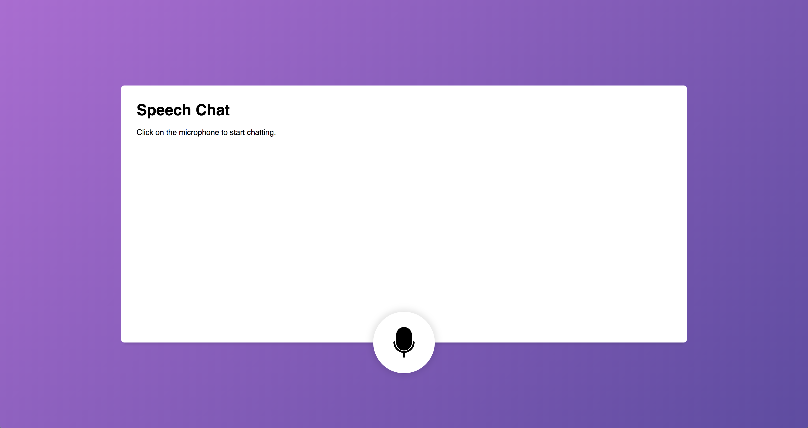

Sam
adventure
About
me
My curiosity for new web technologies stimulates me to give people a good experience. My latest passion is to bring in more motion into the web, because I believe motion is the next step in bringing a better experiences to users, thus creating more usability and conversion to the web
code
-
speech recog-

nitionnode.js
This is a school assignment where I had to implement real-time with sockets. It is a chat app with voice recognition. It will filter out f***, so you have a nice clean chat.
More
- Socket.IO
- JS SeechRecognition -
oba

node.js
An one week project that shows lost buildings from Amsterdam.Features that were used in this project. I would like to play a bit more with MapboxGL, it looks very promising for in the future and displaying data.
More
- SPARQL
- MapboxGL -
browser-tech

Web Audio
With browser-tech we had to support older browsers. Feature detection was one of our main priorities. What happens when you open this app on IE8? When Web Audio Api is supported in your browser you can record with the drumkit!
More